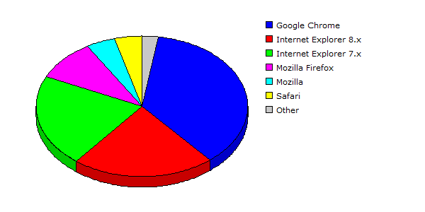

| Rank |
Browser |
Hits |
Visitors |
| 1 |
Google Chrome |
61293 |
40.45% |
3797 |
36.31% |
| 2 |
Internet Explorer 8.x |
48717 |
32.15% |
2290 |
21.90% |
| 3 |
Internet Explorer 7.x |
21714 |
14.33% |
2224 |
21.27% |
| 4 |
Mozilla Firefox |
10543 |
06.96% |
982 |
09.39% |
| 5 |
Mozilla |
1801 |
01.19% |
454 |
04.34% |
| 6 |
Safari |
3968 |
02.62% |
448 |
04.28% |
| 7 |
Netscape 5.x |
3473 |
02.29% |
259 |
02.48% |
| 8 |
Internet Explorer 6.x |
3 |
00.00% |
2 |
00.02% |
| 9 |
AmericaOnline |
1 |
00.00% |
1 |
00.01% |
| 10 |
HTTPClient |
1 |
00.00% |
1 |
00.01% |
| |
Total |
151514 |
10458 |
|
Description: This report contains statistics about the browsers that your visitors use.
|
|